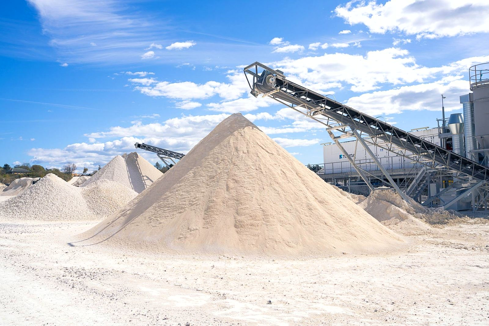
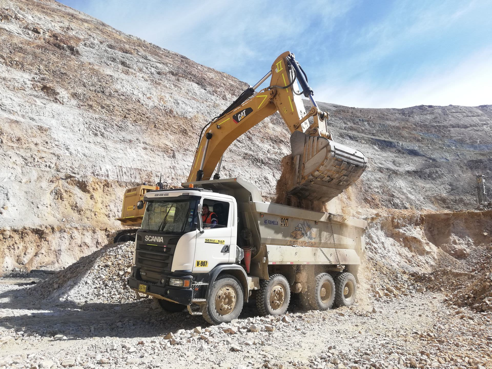
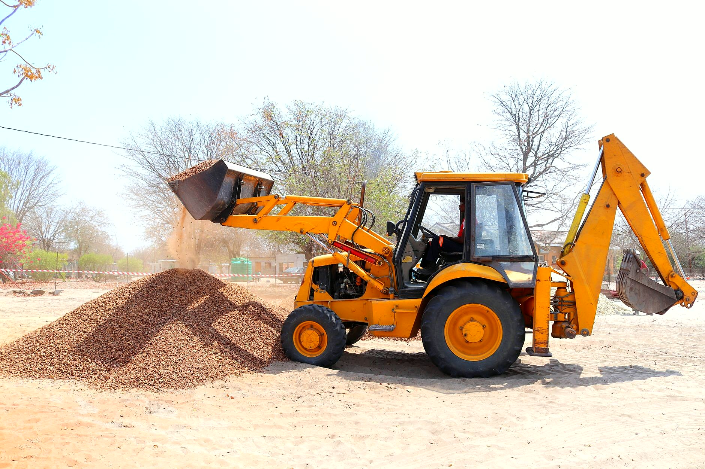
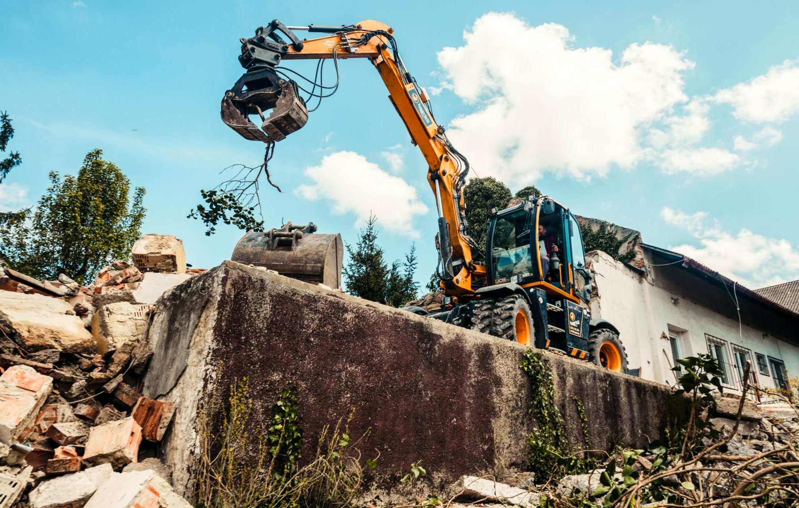
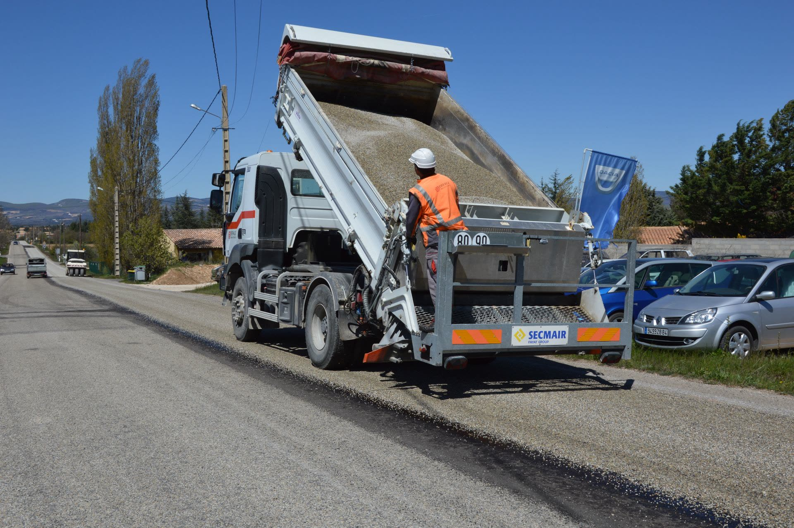
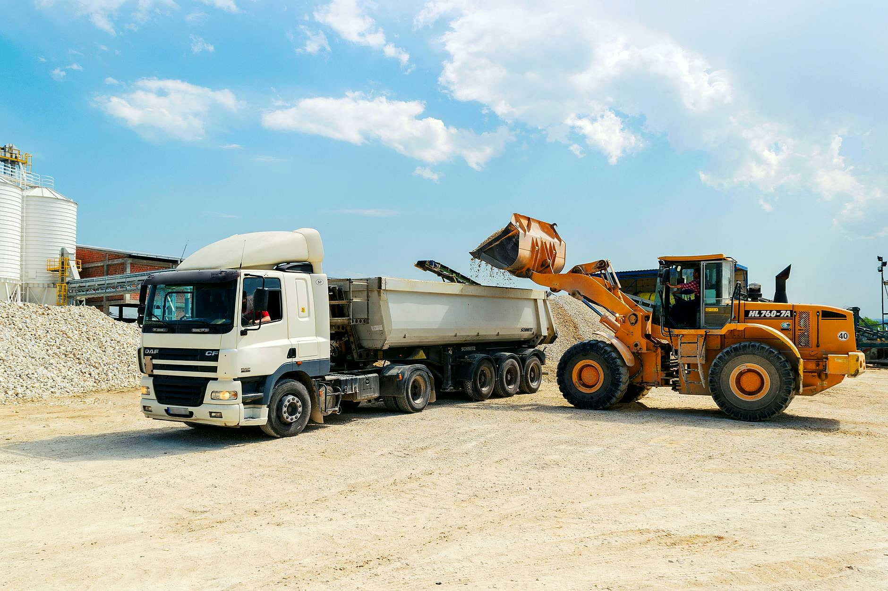
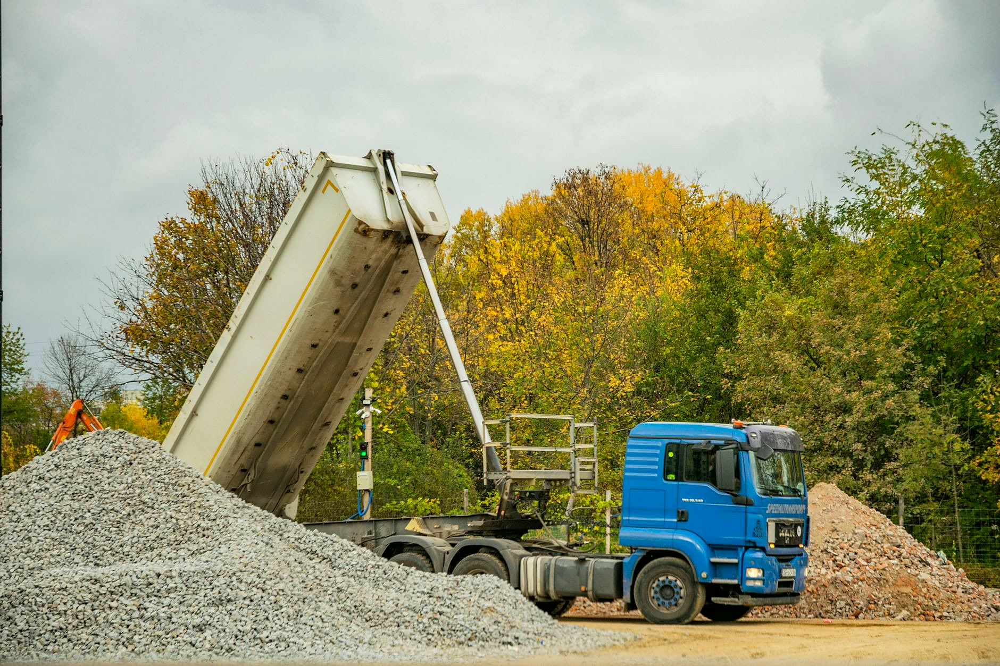
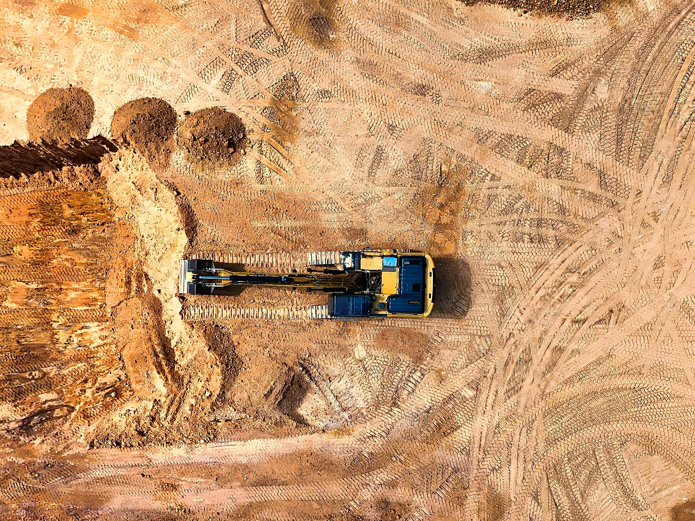

Pod fundamenty, wylewki, kostkę i podjazd. Wysypujemy tam, gdzie wskażesz.
KRAKSTRANS to firma transportowa z Koluszek. Dowozimy materiały sypkie na budowy domów, place i działki, zabieramy gruz po remontach i rozbiórkach, a stare budynki rozbieramy sami. Jeździmy dla domu i dla firm budowlanych, które potrzebują pewnego transportu na dłużej.



Pod fundamenty, wylewki, kostkę i podjazd. Wysypujemy tam, gdzie wskażesz.

Utwardzimy plac i drogę dojazdową, wyrównamy teren pod trawnik.
Zabieramy gruz po remoncie i skuwaniu, posesja zostaje czysta.

Stare szopy, budynki gospodarcze i domy. Rozbiórka i wywóz w jednych rękach.

Ekipy budowlane, brukarze, wykonawcy. Chętnie na stałe przy dłuższych budowach.

Trakker 8x4 zabiera duży ładunek, więc przy budowie wystarczy mniej kursów.
„Bardzo konkretny i rzeczowy człowiek, dobry kierowca, polecam wszystkim Pana Wiesława.”Jarosław Niedźwiecki · opinia w Google

„Firma bezkonkurencyjna w ilości przewożonych materiałów.”Krzysztof Sitkowski · opinia w Google

„Firma w 100% godna polecenia.”Anna Sitkowska · opinia w Google

Powiedz, co trzeba przywieźć albo wywieźć i dokąd. Podamy cenę i dzień kursu.